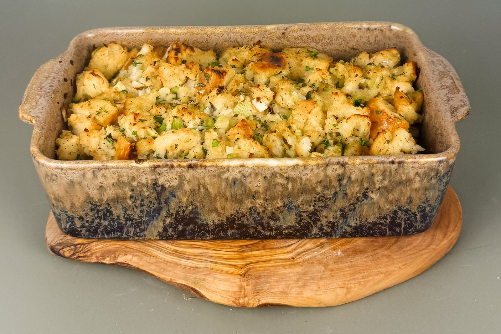

She’s the Goose

Thanksgiving · The Stuffing
With fresh garlic, sage, thyme and reduced apple cider.
Sourdough
Vegetables & Brown Butter
Cider & Stock
Toast the bread. Heat oven to 300°F. Toss sourdough with olive oil. Spread over two baking sheets and toast 25–35 minutes, turning occasionally, until dry and lightly golden. Transfer to a large bowl.
Caramelize the shallots. Melt 3 tablespoons butter in a skillet over medium-low heat. Add shallots and a pinch of salt. Cook about 20 minutes, stirring regularly, until soft and golden. Set aside.
Brown the butter. Cook 5 tablespoons butter in a light-colored saucepan over medium heat, swirling until the milk solids turn golden and smell nutty. Immediately transfer to a heatproof bowl.
Cook the leeks, celery & garlic. Melt the remaining 2 tablespoons butter in the skillet. Cook leeks and celery over medium-low heat for 10–12 minutes until tender. Add minced garlic, sage, thyme, and rosemary; cook 1–2 minutes until fragrant, without burning the garlic. Stir in shallots.
Reduce the cider. Simmer ¾ cup apple cider in a small saucepan until reduced to about ¼ cup, approximately 8–12 minutes. Stir into the vegetables.
Mix the stuffing. Whisk eggs with 2½ cups cooled or lukewarm stock, salt and pepper. Toss vegetables and parsley with toasted bread, then pour the browned butter over and toss again. Pour stock mixture over in stages, folding gently. Rest 10–15 minutes. Add up to ½ cup additional stock if dry; the bread should be moist but not soggy.
Bake covered. Heat oven to 375°F. Butter a 9-by-13-inch baking dish. Transfer stuffing without pressing it down. Cover with foil and bake 25–30 minutes.
Bake uncovered. Remove foil and bake another 20–30 minutes until golden and crisp on top and the center reaches 165°F. Rest 10 minutes before serving.
Optional Variation: For Sausage Lovers. If you prefer a heartier, meat-filled stuffing, add ½–1 pound of Italian or breakfast sausage. Brown it separately, drain excess fat, and fold it into the sourdough mixture before baking. Delicious with sausage, but just as flavorful without it.
Make Ahead & Freezing. Prepare toasted bread and cooked vegetable mixture a day ahead; refrigerate vegetables and keep dried bread airtight. Combine with eggs and stock before baking. To freeze fully baked stuffing, cool promptly, refrigerate within 2 hours, wrap airtight and freeze. Thaw in refrigerator, add a little stock, and reheat covered at 325°F until the center reaches 165°F; uncover briefly to re-crisp.